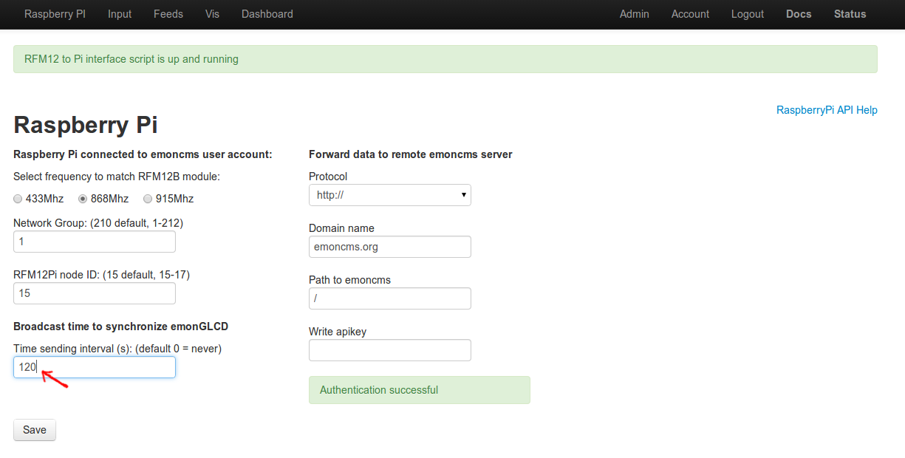

Hi, just completed the build of emontx, emonglcd and rfm12pi. I am a full time software developer so had to teach myself soldering over the last couple of weeks and it's working great :)
I am not bothered about emoncms, I already use a script on the pi to upload my solar readings to pvoutput.
I would like to just use the pi to send the time to emonglcd.
Which emoncms script handles this part, as I would like to modify it just to send the time.
Thanks
Re: How to just send the time part from the raspberry pi to emonglcd
This file receives data from emonTx and sends date:
/emoncms/Modules/raspberrypi/raspberrypi_run.php
Re: How to just send the time part from the raspberry pi to emonglcd
Both gateway scripts do that (php and python). The period to send time it defined in the raspberry pi tab.Default is 0, which means do not send time.
Beware that there can be garbling when using the rfm2pi to both send time and receive info. This does not happen on latest rfm2pi v2 (SMT) board. Use a long period to avoid trouble. If you only do time sending, there shouldn't be any issue, I suppose. It happens when date is received at the same time.
If you're concerned about the gateway script listening on the COM port for nothing, you can comment / remove the code in the script to keep only the time sending part. The time sending feature is not much code, anyway.
See comments here: http://harizanov.com/2013/02/new-rfm2pi-board-in-the-works/
Re: How to just send the time part from the raspberry pi to emonglcd
Thanks got it working, I now run this as a cron job every 30 minutes. I have attached the php script in case anyone else is interested in using it. The baseid/frequency/group are hard coded. Rename to .php
Re: How to just send the time part from the raspberry pi to emonglcd
Hi,
after many tries on and off over the last few months, I have finally got my emonTx, emonGLCD and RasPi working together. The main problem was that none of the emonTx sketches I got from github seemed to work. I finally succeeded after buying an emonGLCD (so I could confirm that the emonTx is sending data), and with the absolutely basic sketch from the emonTx modules page- currently just using a single CT. I'm using the pre-built emoncms SD image on the Pi.
I now need to transmit time from RasPi to emonGLCD, and I thought that I'd found the answer in this thread, but this is all over my head! I have searched, but not found an idiot's guide to this anywhere.
Could somebody please break this information down into instructions that a beginner could follow? I'm familiar with a bit of Linux, but e.g. I would have no idea how to create or use a script, or to "run this as a cron job every 30 minutes".
I appreciate that my knowledge may be too low for a simple explanation, if so- please say so. I'm ok with hardware, but still a novice with Arduino and Linux, etc.
Thanks
Andy.
Re: How to just send the time part from the raspberry pi to emonglcd
Hello Andy, all you should need to do is set the 'Broadcast time to synchronize emonGLCD'
To test it, its useful to set the Broadcast time to something short, but once your happy its working its better to reduce it to 2-5 minutes.

Re: How to just send the time part from the raspberry pi to emonglcd
Wow! That was easy!!! Thanks Trystan. :-)